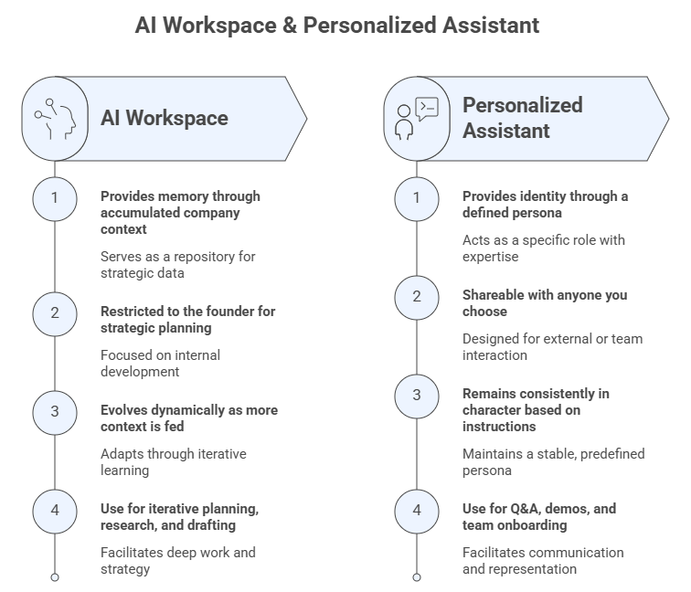

Welcome to AI Cofounder#
Welcome to AI Cofounder, part of the FGCU AI Academy led by the Dendritic Institute for Human-Centered AI & Data Science at Florida Gulf Coast University.
AI Cofounder is the applied entrepreneurship offering of the FGCU AI Academy, designed for anyone who wants to build, plan, or grow a company in the age of artificial intelligence. Whether you are an aspiring entrepreneur with an idea, a professional exploring a new venture, or a business owner looking to reinvent your strategy, this program gives you the mindset, tools, and frameworks to move from concept to plan, with AI as your strategic partner at every step.
This program is not about coding, machine learning, or building software. It is about learning to think and plan like a founder, and doing that thinking and planning with AI as your cofounder. By the end of this journey, you will have produced an AI Company Blueprint: a structured, AI-assisted planning artifact that covers your strategy, your customers, your business model, and your pitch.
This Jupyter Book is your interactive guide through the company-building process, from entrepreneurial mindset and opportunity discovery to business modeling and investor pitching, with AI tools woven into every stage.
1. Program Goals#
The goal of this program is to equip learners with the entrepreneurial frameworks and AI-augmented skills to confidently plan, design, and communicate a new company or venture. By the end of this journey, you will:
Understand how AI is transforming entrepreneurship and what it means to build a company with AI as a strategic partner (a cofounder).
Use GenAI tools effectively for business research, strategic planning, and decision-making.
Apply foundational entrepreneurial frameworks, such as strategic positioning, customer development, and business model design, augmented by AI at each stage.
Build and use an AI Cofounder Workspace: a sharable, persistent and context-rich AI environment that evolves alongside your company concept across all four sessions.
Build and use an AI Assistant to serve as the engine of a chatbot for your company.
Develop and communicate a compelling business case through an AI-assisted pitch.
2. Learning Objectives#
By completing this program, you will be able to:
Describe how AI is reshaping entrepreneurship and identify AI-enhanced entrepreneurial competencies.
Set up and use an AI Workspace (Project) as a strategic co-thinking partner for business planning.
Craft effective prompts and contexts for entrepreneurial use cases, including research, analysis, strategy, and communication.
Define your startup’s mission, vision, value proposition, and competitive position using AI-assisted frameworks.
Use AI to build customer personas, simulate discovery interviews, and design empathy-driven solutions.
Complete a Business Model Canvas for a new company or venture with AI assistance.
Design and deliver an elevator pitch and pitch deck draft, enhanced by AI tools.
Critically evaluate AI outputs and maintain human judgment throughout the planning process.
3. Learning Philosophy and Approach#
This program embraces a human-centered, practice-first philosophy. The entrepreneurial process is inherently iterative, ambiguous, and human. AI does not replace that; it amplifies it.
Key principles guiding this program:
AI augments judgment, it does not replace it. Every framework, tool, and activity in this program is designed to develop your thinking. AI is the accelerator, not the author.
Build while you learn. Each module produces a concrete piece of your AI Company Blueprint. By Module 4, you leave with a real artifact, not just notes.
Iteration over perfection. Company plans evolve. Treat every AI output as a starting point to critique, refine, and improve, not as a finished answer.
The best prompt is a well-framed question/ask. Entrepreneurship and prompt engineering share a core skill: asking the right question in the right context. This program develops both simultaneously.
4. The AI Workspace: Your Cofounder’s Design Environment#
One of the most powerful, and underused, features of modern GenAI platforms is the ability to create a persistent AI Workspace: a dedicated environment where your AI assistant retains context about your company, your goals, and your decisions across multiple conversations.
Think of it this way:
A human cofounder has the whole context, he/she remembers your previous conversations, knows your company’s mission, understands your target customer, and builds on what you discussed last week. An AI Workspace does exactly that, it gives your AI cofounder memory and knowledge.
In this program, you will set up your AI Cofounder Workspace at the beginning of Module 1, and you will use it across all modules. As you complete each Blueprint piece, you will feed that context back into your Workspace. So, by Module 4, your AI cofounder knows your mission, your customer, your business model, and your competitive landscape, and can help you build a pitch grounded in everything you have developed together.
Setting Up Your AI Cofounder Workspace#
Different GenAI platforms offer equivalent workspace features under different names:
Platform |
Workspace Feature |
How to Access |
|---|---|---|
Claude (Anthropic) |
Projects |
claude.ai → New Project |
ChatGPT (OpenAI) |
Projects |
chatgpt.com → Projects |
Perplexity |
Spaces |
perplexity.com → Spaces |
Grok (X.ai) |
Projects |
x.ai → Projects |
Copilot (Microsoft) |
Projects |
copilot.microsoft.com → Projects |
Regardless of platform, the setup follows the same logic:
Create a new Workspace named after your company concept (e.g., “GreenTrace Startup” or “MedAssist Ventures”).
Write a Workspace System Prompt, that is, a short paragraph that introduces your company idea, your role, and what you want the AI to help with. You will draft this in Module 1.
Feed each Blueprint piece into the Workspace as you complete it, so the AI accumulates context progressively across the four sessions.
Run all program activities inside this Workspace, not in a generic chat window. Start one specific chat (thread) for each blueprint piece and rename it accordingly. This is what organizes the environment and makes the AI a genuine cofounder rather than a one-off assistant.
Why this matters:
A generic AI chat has no memory of your company and retains no context. Your AI Cofounder Workspace does. The difference between a useful AI tool and a genuine strategic partner is context, and you are going to build that context deliberately, piece by piece.
5. The Personalized Assistant: Your AI Cofounder’s Identity#
A Personalized Assistant is a pre-configured AI chatbot that you design, instruct, and deploy for a specific purpose. Unlike a generic AI chat, it:
Has a defined name and persona (e.g., “Nova — AI Strategy Advisor for GreenTrace”)
Operates under specific instructions that keep it focused on your startup’s domain, tone, and goals
Can be loaded with company knowledge, your Blueprint pieces, your product documentation, your FAQs, as an embedded knowledge base
Can be shared with others, such as team members, customers, advisors, or investors exploring your concept
Maintains consistent behavior every time it is accessed. It does not drift or forget its role the way a generic chat might
Setting Up Your Personalized Assistant#
Different platforms use different terminology, but the setup logic is consistent:
Platform |
Feature |
How to Create |
Key Capability |
|---|---|---|---|
ChatGPT (OpenAI) |
Custom GPTs |
chatgpt.com → Explore GPTs → Create |
Conversational builder, web browsing, image generation, Actions (API calls) |
Gemini (Google) |
Gems |
gemini.google.com → Gems → Create a Gem |
Custom instructions, Google Workspace integration |
Copilot (Microsoft) |
Copilot Studio Agents |
Enterprise integration, Teams deployment |
Regardless of platform, every Personalized Assistant requires three core configuration elements:
Name and persona: Give your assistant a name and a brief description of its role. This anchors its identity for every user who interacts with it.
System instructions: A structured set of guidelines that tell the assistant who it is, what it knows, how it should behave, and what it should not do. This is the most important configuration element. You will write this in Module 1.
Knowledge base: Documents, FAQs, or text that the assistant can draw on when answering questions. You will populate this progressively with your Blueprint pieces.
Why this matters:
Your Personalized Assistant is only as good as its instructions and knowledge base. Spend time refining the system prompt, because it is an important writing you will do in this program. A well-written assistant set of instructions and knowledge base will improve every conversation anyone has with your startup’s AI cofounder.
6. AI Workspace vs Personalized Assistant#
While the AI Workspace gives your AI cofounder context and memory, a Personalized Assistant gives it identity and support, a defined name, role, persona, expertise, and set of capabilities configured specifically for your startup. Think of the two as complementary layers of the same relationship:
AI Workspace (Project) |
Personalized Assistant |
|
|---|---|---|
What it provides |
Memory: accumulated context about your company |
Identity: a defined persona and role |
Who uses it |
You, as the founder doing strategic planning |
You + anyone you choose to share it with |
How it behaves |
Evolves as you feed it more context |
Consistently “in character” based on its instructions |
Best used for |
Iterative planning, research, document drafting |
Q&A, demos, customer simulation, team onboarding |
Platform examples |
Claude Projects, ChatGPT Projects |
Custom GPTs, Gemini Gems |
Together, the Workspace and the Personalized Assistant form your AI Cofounder setup: a private planning environment where strategy is developed, and a deployable AI representative that embodies your startup for any audience.
How the Two Tools Work Together#
In this program, you will configure your Personalized Assistant in Module 1 and use it progressively throughout the four modules, loading it with each Blueprint piece as you complete it, just as you do with the Workspace. By Module 4, your Personalized Assistant will be a fully briefed AI representative of your startup, capable of:
Answering questions about your company’s mission, product, and value proposition
Simulating investor Q&A for pitch practice
Onboarding new team members or collaborators
Serving as a demo artifact that showcases how your startup uses AI

7. The Role of Generative AI in This Program#
In AI Cofounder, GenAI tools serve as strategic thinking partners, not ghostwriters, not answer machines. Throughout this program, AI assists with:
Research and analysis: market sizing, competitor mapping, trend identification.
Strategic questioning: challenging assumptions, surfacing blind spots, stress-testing ideas.
Customer simulation: generating and role-playing customer personas, simulating discovery interviews.
Business modeling: exploring revenue models, cost structures, and growth scenarios.
Communication: drafting pitch narratives, refining messaging, preparing for Q&A.
However, AI does not replace:
Domain judgment: knowing your industry, your customers, and your context.
Ethical reasoning: deciding what kind of company to build, and how.
Human relationships: customer trust, team culture, investor relationships.
Critical evaluation: recognizing when an AI output is wrong, shallow, or misleading.
In every activity in this program, you are the decision-maker. The AI is your research partner, devil’s advocate, and drafting assistant, but the company is yours.
8. How to Use This Book#
Navigate sessions using the left-hand sidebar or the Next / Previous buttons at the bottom of each page.
Each session opens with a framing block (concepts and frameworks), moves into AI-assisted activities, and closes with a Blueprint Checkpoint, your session deliverable.
Look for 💡 Examples, ⚙️ Classwork Activities (CW), and 📋 Blueprint Checkpoints throughout.
Prompts marked with Reference Prompt are ready to copy, paste into your AI Cofounder Workspace, and adapt to your concept.
Use this book alongside the live sessions, Canvas course materials, and AI demonstrations offered by the FGCU AI Academy.
9. Your AI Company Blueprint#
The AI Company Blueprint is the cumulative deliverable of this program: a structured, AI-assisted planning artifact you build progressively across all four modules.
Module |
Blueprint Piece |
What It Contains |
|---|---|---|
1 |
Strategic Positioning Statement |
Mission, vision, core values, problem description, unique value proposition, SWOT analysis |
2 |
Customer Persona + Value Proposition |
Target customer profile, customer pains and gains, value map, jobs-to-be-done |
3 |
Business Model Canvas |
All 9 BMC blocks, unit economics basics, key assumptions |
4 |
Elevator Pitch + Pitch Deck Draft |
180-second pitch script, 10-slide deck outline |
The Blueprint is not a finished business plan, it is a living document designed to be refined, tested, and evolved as you move from planning to building. At the end of Module 4, you will assemble all four pieces into a single cohesive artifact.
10. Program Roadmap at a Glance#
Session |
Theme |
Core Focus |
|---|---|---|
1 |
The AI Cofounder Mindset |
AI entrepreneurship revolution · AI-enhanced competencies · GenAI toolkit for founders · Strategic positioning |
2 |
Customer & Idea Discovery with AI |
Customer development · Design thinking · Empathy mapping · Value proposition design |
3 |
Business Model & Planning with AI |
Lean startup · Business Model Canvas · Legal essentials · Funding landscape |
4 |
From Plan to Pitch with AI |
Pitch deck design · Entrepreneurial storytelling · AI-enhanced delivery · Blueprint assembly |
Reflection#
As you begin this program, consider the following questions:
What problem do you most want to solve and who would benefit most if you solved it?
How might AI change what is possible for you as an entrepreneur, compared to five years ago?
What does it mean to work with an AI rather than simply use one?
What will human founders need to be uniquely good at in a world where AI handles much of the analytical and drafting work?
Revisit these questions at the end of Module 4. Your answers will have changed.
About the Instructor – Dr. Leandro Nunes de Castro#
Professor in the Department of Computing and Software Engineering, U.A. Whitaker College of Engineering, FGCU.
Ph.D. in Computer Engineering with 30 years of experience in Artificial Intelligence, Data Science, and Natural Computing.
Founding Director of the Dendritic Institute for Artificial Intelligence and Data Science at FGCU.
Author of various AI and Data Science books and papers, and recognized among the Top 2% most influential researchers in Computer Science worldwide.
Experienced entrepreneur, researcher, and educator with a focus on applying AI for innovation, business, and societal impact.
Active mentor and collaborator with international academic and industry partners.
🧾 Acknowledgements#
Developed by Dr. Leandro Nunes de Castro©️ for the Dendritic Institute for Human-Centered AI & Data Science, within the U.A. Whitaker College of Engineering at Florida Gulf Coast University.
Content curated with support from large language models such as ChatGPT, Claude, Gemini, Perplexity, Gamma.ai, Napkin, and CoPilot, following ethical and pedagogical review.
Note
This Jupyter Book is part of the FGCU AI Academy’s Applied Entrepreneurship Track, aligning with the Dendritic Institute’s mission to foster responsible, innovative, and human-centered engagement with artificial intelligence.